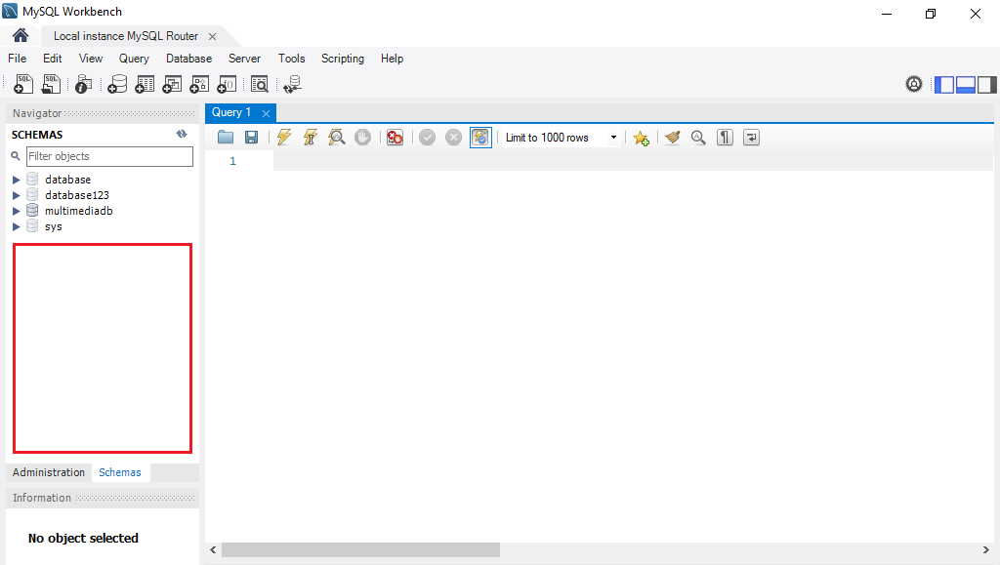
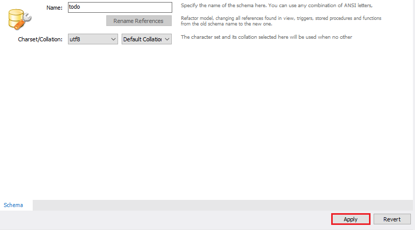
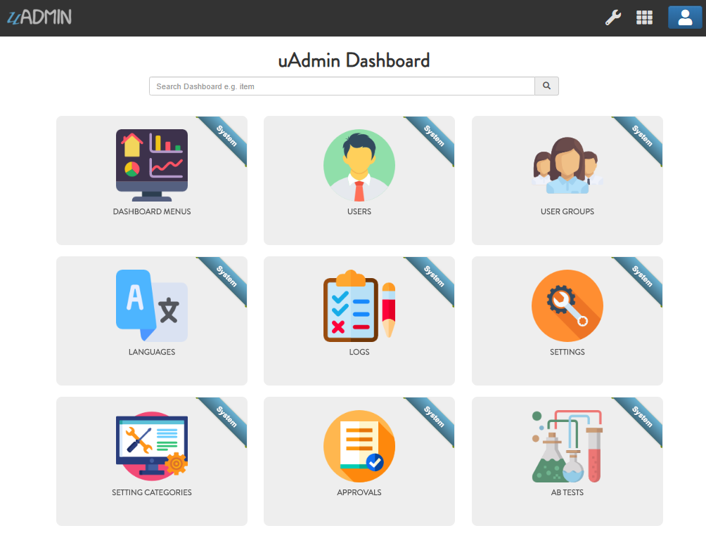
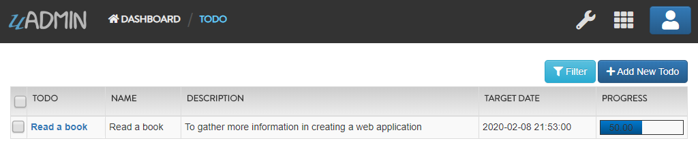

Database Functions¶
In this section, we will cover the following functions in-depth listed below:
uadmin.ClearDB¶
func ClearDB()
ClearDB clears the database object.
Suppose I have two databases in my project folder.

And I set the Name to uadmin.db on Database Settings in main.go.
func main(){
uadmin.Database = &uadmin.DBSettings{
Type: "sqlite",
Name: "uadmin.db",
}
// Some codes
}
Let’s create a new file in the models folder named “expression.go” with the following codes below:
package models
import "github.com/uadmin/uadmin"
// ---------------- DROP DOWN LIST ----------------
// Status ...
type Status int
// Keep ...
func (s Status) Keep() Status {
return 1
}
// ClearDatabase ...
func (s Status) ClearDatabase() Status {
return 2
}
// -----------------------------------------------
// Expression model ...
type Expression struct {
uadmin.Model
Name string `uadmin:"required"`
Status Status `uadmin:"required"`
}
// Save ...
func (e *Expression) Save() {
// If Status is equal to ClearDatabase(), the database
// will reset and open a new one which is todolist.db.
if e.Status == e.Status.ClearDatabase() {
uadmin.ClearDB() // <-- Place it here
// Database configurations
uadmin.Database = &uadmin.DBSettings{
Type: "sqlite",
Name: "todolist.db",
}
// Returns a pointer to the DB
uadmin.GetDB()
}
// Override save
uadmin.Save(e)
}
Register your Expression model in the main function.
func main() {
// Some codes
uadmin.Register(
// Some registered models
models.Expression{}, // <-- place it here
)
// Some codes
}
Run the application. Go to the Expressions model and add at least 3 interjections, all Status set to “Keep”.

Now create another data, this time set the Status as “Clear Database” and see what happens.

Your account will automatically logout in the application. Login your account again, go to the Expressions model and see what happens.

As expected, all previous records were gone in the model. It does not mean that they were deleted. It’s just that you have opened a new database called “todolist.db”. Check out the other models that you have. You may notice that something has changed in your database.
Quiz:
uadmin.Database¶
var Database *DBSettings
Database is the active Database settings.
There are 6 fields that you can use in this function:
Host - returns a string. It is an IP address where the database was hosted.
Name - returns a string. This will generate a database file in your project folder.
Password - returns a password string
Port - returns an int. It is the port used for http or https server.
Type - returns a string. There are 2 types: SQLLite and MySQL.
User - returns a user string
Warning
uadmin.Database function is deprecated on version 0.4.0 and above. Instead, we have to create a new file called .database.
Apply the following codes in .database file below to create SQLite database:
{
"type": "sqlite",
"name": "todolist.db"
}
If you run your code,
[ OK ] Initializing DB: [13/13]
[ OK ] Initializing Languages: [185/185]
[ INFO ] Auto generated admin user. Username: admin, Password: admin.
[ OK ] Synching System Settings: [46/46]
[ OK ] Server Started: http://0.0.0.0:8080
___ __ _
__ __/ | ____/ /___ ___ (_)___
/ / / / /| |/ __ / __ __ \/ / __ \
/ /_/ / ___ / /_/ / / / / / / / / / /
\__,_/_/ |_\__,_/_/ /_/ /_/_/_/ /_/
The todolist.db file is automatically created in your main project folder.

See uadmin.DBSettings for the process of configuring your database in MySQL.
Quiz:
uadmin.DBSettings¶
type DBSettings struct {
Type string `json:"type"` // sqlite, mysql
Name string `json:"name"` // File/DB name
User string `json:"user"`
Password string `json:"password"`
Host string `json:"host"`
Port int `json:"port"`
}
DBSettings is a feature that allows a user to configure the settings of a database.
Warning
uadmin.DBSettings function is deprecated on version 0.4.0 and above. Instead, we have to create a new file called .database.
Apply the following codes in .database file below to create SQLite database:
{
"type": "sqlite",
"name": "todolist.db"
}
If you run your code,
[ OK ] Initializing DB: [13/13]
[ OK ] Initializing Languages: [185/185]
[ INFO ] Auto generated admin user. Username: admin, Password: admin.
[ OK ] Synching System Settings: [46/46]
[ OK ] Server Started: http://0.0.0.0:8080
___ __ _
__ __/ | ____/ /___ ___ (_)___
/ / / / /| |/ __ / __ __ \/ / __ \
/ /_/ / ___ / /_/ / / / / / / / / / /
\__,_/_/ |_\__,_/_/ /_/ /_/_/_/ /_/
The todolist.db file is automatically created in your main project folder.
You can also migrate your application into the MySQL database server. In order to do that, you must have the MySQL Workbench application installed on your computer. Open your MySQL Workbench and set up your Connection Name (example below is uadmin). Hostname, Port and Username are automatically provided for you but you can change the values there if you wish to. For this example, let’s apply the following information below.

Click Test Connection to see if the connection is working properly.

Result

Once you are done with the connection testing, click OK on the bottom right corner. You will see the interface of the application. Let’s create a new schema by right clicking the area on the bottom left corner highlighted below then select Create Schema.
Input the value of the schema name as “todo”, charset as utf8 and collation as Default Collation then click Apply.
You will see the Apply SQL Script to the Database form. Leave it as it is and click Apply.

Your todo schema has been created in the MySQL. Congrats!

Warning
uadmin.DBSettings function is deprecated on version 0.4.0 and above. Instead, we have to create a new file called .database.
Apply the following codes in .database file below o create MySQL database:
{
"type": "mysql",
"name": "todo",
"user": "root",
"password": "(your MySQL password)",
"host": "127.0.0.1",
"port": 3306
}
The information above is well-based on the database configuration settings in MySQL Workbench.
Once you are done, run your application and see what happens.
[ OK ] Initializing DB: [13/13]
[ OK ] Initializing Languages: [185/185]
[ INFO ] Auto generated admin user. Username: admin, Password: admin.
[ OK ] Synching System Settings: [46/46]
[ OK ] Server Started: http://0.0.0.0:8080
___ __ _
__ __/ | ____/ /___ ___ (_)___
/ / / / /| |/ __ / __ __ \/ / __ \
/ /_/ / ___ / /_/ / / / / / / / / / /
\__,_/_/ |_\__,_/_/ /_/ /_/_/_/ /_/
Open your browser and type the IP address above. Then login using “admin” as username and password.

You will be greeted by the uAdmin dashboard. System models are built in to uAdmin.
Now open your MySQL Workbench. On todo database in the schema panel, the tables are automatically generated from your uAdmin dashboard.

Congrats, now you know how to configure your database settings in both SQLite and MySQL.
Quiz:
uadmin.DebugDB¶
// Type: bool
var DebugDB = false
DebugDB prints all SQL statements going to DB.
To assign a value within an application, visit DebugDB page for an example.
To assign a value in the code, follow this approach:
Go to the main.go. Set this function as true.
func main(){
// NOTE: This code works only on first build.
uadmin.DebugDB = true
// ----- IF YOU RUN YOUR APPLICATION AGAIN, DO THIS BELOW -----
// Assign the Debug DB value as "on" to set the value as true
// in the settings
setting := uadmin.Setting{}
uadmin.Get(&setting, "code = ?", "uAdmin.DebugDB")
setting.ParseFormValue([]string{"on"})
setting.Save()
}
Check your terminal to see the result.
[ OK ] Initializing DB: [13/13]
[ OK ] Synching System Settings: [46/46]
(/home/dev1/go/src/github.com/uadmin/uadmin/db.go:428)
[2018-11-10 12:43:07] [0.09ms] SELECT count(*) FROM "languages" WHERE "languages"."deleted_at" IS NULL
[0 rows affected or returned ]
(/home/dev1/go/src/github.com/uadmin/uadmin/db.go:298)
[2018-11-10 12:43:07] [0.17ms] SELECT * FROM "languages" WHERE "languages"."deleted_at" IS NULL AND ((active = 'true'))
[1 rows affected or returned ]
(/home/dev1/go/src/github.com/uadmin/uadmin/db.go:238)
[2018-11-10 12:43:07] [0.16ms] SELECT * FROM "languages" WHERE "languages"."deleted_at" IS NULL AND ((`default` = 'true')) ORDER BY "languages"."id" ASC LIMIT 1
[1 rows affected or returned ]
(/home/dev1/go/src/github.com/uadmin/uadmin/db.go:162)
[2018-11-10 12:43:07] [0.32ms] SELECT * FROM "dashboard_menus" WHERE "dashboard_menus"."deleted_at" IS NULL
[13 rows affected or returned ]
(/home/dev1/go/src/github.com/uadmin/uadmin/db.go:428)
[2018-11-10 12:43:07] [0.07ms] SELECT count(*) FROM "users" WHERE "users"."deleted_at" IS NULL
[0 rows affected or returned ]
Quiz:
uadmin.GetDB¶
func GetDB() *gorm.DB
GetDB returns a pointer to the DB.
Before we proceed to the example, read Tutorial Part 9 - Introduction to API to familiarize how API works in uAdmin.
Suppose I have one record in the Todo model.
Create a file named custom_todo.go inside the api folder with the following codes below:
// CustomTodoHandler !
func CustomTodoHandler(w http.ResponseWriter, r *http.Request) {
r.URL.Path = strings.TrimPrefix(r.URL.Path, "/custom_todo")
r.URL.Path = strings.TrimSuffix(r.URL.Path, "/")
res := map[string]interface{}{}
// Initialize the Todo model
todolist := []models.Todo{}
// Create a query in the sql variable to select all records in todos
sql := `SELECT * FROM todos`
// Place it here
db := uadmin.GetDB()
// Store the query inside the Raw function in order to scan value to
// the Todo model
db.Raw(sql).Scan(&todolist)
// Print the result in JSON format
res["status"] = "ok"
res["todo"] = todolist
uadmin.ReturnJSON(w, r, res)
}
Establish a connection in the main.go to the API by using http.HandleFunc. It should be placed after the uadmin.Register and before the StartServer.
func main() {
// Some codes
// CustomTodoHandler
http.HandleFunc("/custom_todo/", uadmin.Handler(api.CustomTodoHandler)) // <-- place it here
}
api is the folder name while CustomTodoHandler is the name of the function inside custom_todo.go.
Run your application and see what happens.

Quiz:
uadmin.OptimizeSQLQuery¶
// Type: bool
var OptimizeSQLQuery = false
OptimizeSQLQuery selects columns during rendering a form a list to visible fields. This means during the filtering of a form the select statement will not include any field with hidden tag. For list it will not select any field with list_exclude.
To assign a value within an application, visit Optimize SQL Query page for an example.
To assign a value in the code, follow this approach:
Example:
func main(){
// NOTE: This code works only on first build.
// Enable
uadmin.OptimizeSQLQuery = true
// Disable
uadmin.OptimizeSQLQuery = false
// ----- IF YOU RUN YOUR APPLICATION AGAIN, DO THIS BELOW -----
// Enable
setting := uadmin.Setting{}
uadmin.Get(&setting, "code = ?", "uAdmin.OptimizeSQLQuery")
setting.ParseFormValue([]string{"true"})
setting.Save()
// Disable
setting := uadmin.Setting{}
uadmin.Get(&setting, "code = ?", "uAdmin.OptimizeSQLQuery")
setting.ParseFormValue([]string{"false"})
setting.Save()
}